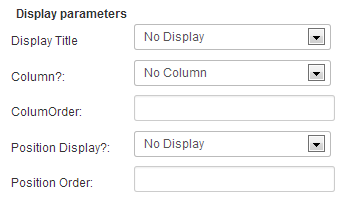
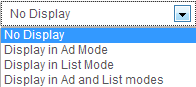
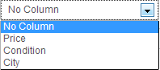
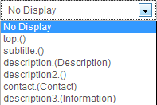

One powerful functionality with fields is the possibility to make them conditional. This means only display a field if another field has certain defined values. Combinations are pretty infinite til you can mix fields with different types. Below is a quick example :
Your ad is in a category, let's say, "Automobile/Boats", and assume that there will be different fields for automobiles and boats. If you want to show certain relevant fields only when in the boat category, you can do so using conditional fields.
Here an example of conditional fields.
The parent field doesn't need a special configuration.
Once you've created the parent field, you need to create a new field, this one will be set to be displayed only if a specific value of the parent field is selected.
Set 'Conditional Display' to Yes and specify which values of the parent field will cause the current field to be displayed.
Tips : You can associate any fields like the two above and customize your ads form like you want.
These fields are pretty easy to understand so we'll just describe the content of the dropdown select here:
Display Title:
Column:
If you don't know what columns are in AdsManager, see Creating columns. Otherwise you can assign which fields to display in the column and their ordering.
Position Display:
Important: field names are case-sensitive so be sure you exactly type the same name, you can copy/paste it.
You can set a limit of ads per user for your category, you just have to fill the field with the limited number that you want.
The -1 value is a unlimited number of ads.
You can also limit the access of your categories to a chosen user groups.
Two options are available, 'Read' will limit the read access of the category to the users in the authorized groups, 'Write' will limit the write access of the category to the users in the authorized groups.